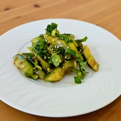

Cette entrée est un plat populaire de la cuisine chinoise, reconnue pour sa simplicité et sa fraîcheur, en particulier pendant les périodes estivales. Elle fait partie de l'histoire culinaire de la Chine depuis des siècles.
On la retrouve dans tout le pays sous différentes variantes régionales mais son origine exacte reste difficile à retracer.
J'ai choisi ici de vous présenter ma variante préférée: la version aigre et épicée du Sichuan, mais sachez qu'il en existe d'autres (même au sein du Sichuan).
cuillère à café de
cuillère à café de
cuillère à café d'
cuillère à soupe de
cuillère à soupe de
cuillère à soupe de
cuillère à soupe de
cuillère à soupe de
cuillère à café d'
grammes de
Choisissez des concombres plutôt fins. Les concombres larges auront une peau plus épaisse, plus de graines et seront plus difficiles à dégorger.
En ce qui concerne la longueur, vous pouvez choisir des concombres longs tels que les concombres anglais ou des mini concombres. Si vous choisissez des concombres longs, je vous conseille d'enlever les graines afin d'enlever un maximum d'eau et d'éplucher en partie la peau afin de réduire son goût amer.
J'utilise habituellement une huile pimentée faite maison mais si vous n'en avez pas je recommande d'utiliser l'huile pimentée Crispy chili in oil de la marque Lao Gan Ma.
La quantité d'huile pimentée est modulable en fonction de vos préférences.
La sauce d'huître n'est traditionnellement pas utilisée au Sichuan dans cette recette, mais elle apporte beaucoup en umami et en texture à la sauce.
Si vous voulez une recette plus traditionnelle de cette salade (ou une version végan), vous pouvez choisir de ne pas en utiliser.
Préférez un vinaigre noir chinois comme celui de Baoning (Sichuan) ou celui de Zhenjiang (Jiangsu). Sinon, choisissez un vinaigre de riz blanc mais évitez d'utiliser du vinaigre d'alcool.
Découpez les extrémités des concombres (2)
Si vous utilisez des concombres longs, épluchez des bandes sur les concombres en motif alterné de peau pelée et non pelée. Cela réduira l'amertume et la fermeté de la peau tout en conservant sa structure.
Coupez les comcombres en deux dans le sens de la longueur. Retirez les graines si vous utilisez des concombres longs. Enlever ces sections aqueuses aidera à garder les concombres croquants et évitera de diluer la sauce.
En utilisant le côté plat de la lame de votre couteau, écrasez le concombre.
Coupez-les en tranches épaisses en biais ou droites selon votre préférence. Réservez dans un bol.
Ajoutez le sel (1 cuillère à café) et le sucre (1 cuillère à café) à vos concombres et mélangez bien.
Laissez reposer au frigo pendant 5 à 30 minutes afin que l'eau puisse s'extraire des concombres.
Hachez finement les cébettes (2) et réservez.
Écrasez ou hachez très finement l'ail (4) et réservez.
(Optionnel) Hachez grossièrement la coriandre (5g) et réservez.
Combinez dans un bol: L'huile pimentée (½ cuillère à café) La sauce soja (1 cuillère à soupe) La sauce d'huître (1 cuillère à soupe) Le vinaigre (2 cuillère à soupe)Le sucre (2 cuillères à soupe)L'ail
Mélangez.
Égouttez autant d'eau que possible des concombres et pressez-les avec du papier absorbant.
Ajoutez les cébettes hachées et la sauce à vos concombres.
(Optionnel) Ajoutez la coriandre, les graines de sésame (1 cuillère à soupe) et l'huile de sésame (½ cuillère à café). Ajuster les quantités à votre préférences.
Mélangez bien, dressez et dégustez !
